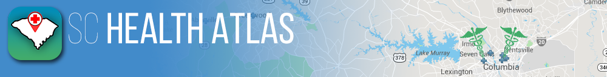

Blue Cross Blue Shield Foundation of SC and the University of South Carolina are working together to build a database of health and social services organizations in SC. This database will be used to help Blue Cross Blue Shield Foundation of SC in their grant making activities, and will be included in an online map. We are asking organizations that provide services in the following areas to participate in a short survey: childhood and adolescent health, community health, free medical or dental care, behavioral health, and/or obesity prevention. The survey will be updated and sent out annually to SC hospitals, free clinics, FQHCs, school-based clinics, state health agencies, and non-profit organizations. If you have any questions, please contact us.
contact person: Neset Hikmet (nhikmet@mailbox.sc.edu)
SC Health Atlas is a source of health and social services data for South Carolina. The Atlas allows users to create and manipulate maps, find all services within a close proximity, get driving directions, and more. The purpose of the Atlas is to give South Carolinians the data and tools necessary to explore the availability of health and social services in their communities, and link people to the care they need. We regularly add new information to the Atlas, so we encourage you to visit often and let us know how the tool could be improved. For more information on the atlas or to give us feedback, please contact us [provide link to contact us page]
contact person: Jan Eberth (jmeberth@mailbox.sc.edu).